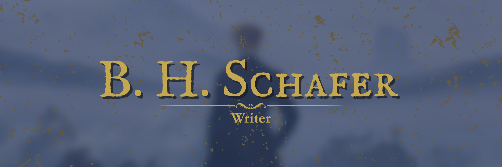

Start Here

Hey there,
Who I Am & What I Do
My name is B. H. Schafer. I write Speculative and Literary fiction, and essays on human tensions, explored through literature. You can check out some of my work here, on my Substack page, but here are some recommendations to get you started:
Fantasy
The Wolf in the Hollow
A chance encounter with a dying wolf awakens something fierce in a humiliated village boy.
Read NowAt the Old Beast's Shore
When a warlord comes for his land, an aging warrior must choose between survival and legacy.
Read NowElixir
An artist suffering from immortality in a kingdom where death has been cured, seeks a way to re-awaken his soul.
Read NowHorror
Full Manuscript Requested
A dejected writer, drowning in artistic desperation, does whatever it takes to be seen.
Read NowThe Door in Shallow Water
A mysterious gold-engraved door vanishes a boy in shallow waters, triggering a devastating supernatural mystery that consumes his entire family.
Read NowLiterary
Sweet Enough to Hurt
A touching short story about memory, war, and the small acts of love, like a red apple, that linger long after goodbyes.
Read NowWings and Fangs
In this dark fable, a young eagle must choose between the sky and the comfort of the nest—with dire consequences.
Read NowWhat I'm Working On
What I'm primarily working on, at the moment, is my self-publishing debut, an Action-Adventure Fantasy, as well as a YouTube channel that focuses primarily on those essays I mentioned. You can see the progress of those in the tracker tab to the right of the screen when you're on the homepage.
How to Get in Touch
If you want to get in touch with me, you can do so through my socials, Substack, where I'm most active currently, X/Twitter, or Instagram. You can also reach out via this email: contact@bhschafer.com, or, alternatively, you can send me a message through the contact page here, on this site.
How to Get and Stay Involved
If you want to stay involved or abreast with what I'm doing, you can check out my blog on this site, or—and this is a wonderful option—sign up for my newsletter, 'Schafer's Quill,' where you won't only receive updates from me directly, but you'll also receive essays and short stories that I work on, delivered straight to your inbox.